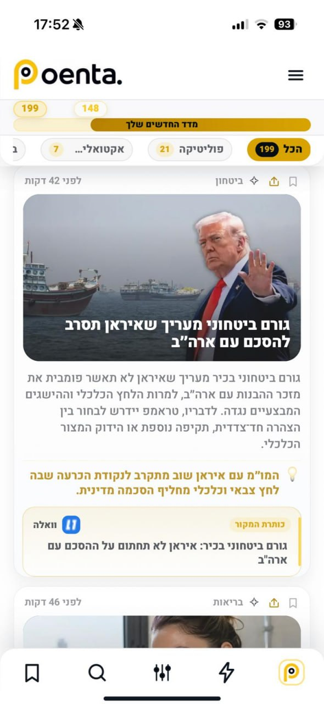

01
יותר מדי רעש
אותה ידיעה מופיעה שוב ושוב ממקורות שונים, וקשה להבין מה באמת חדש.
נבנה לצורכי חדשות בישראל — לאנשים שהזמן שלהם יקר
Poenta מרכזת את החדשות ממקורות ונושאים שבחרתם, מסננת רעש וכפילויות, ומחזירה לכם את העיקר — ברור, מהיר ובעברית.

מקורות ונושאים שמעניינים אתכם.
רעש, כפילויות ועדכונים לא רלוונטיים.
מה חדש באמת — בלי לפתוח עשר כתבות.
הבעיה
כותרות חוזרות, מקורות מפוזרים, התראות בלי סוף וכתבות ארוכות מדי. Poenta נועדה לאנשים שרוצים לדעת — אבל לא רוצים שכל היום ייעלם בתוך הפיד.
אותה ידיעה מופיעה שוב ושוב ממקורות שונים, וקשה להבין מה באמת חדש.
כל מקור דורש לפתוח אתר אחר, לעבור פרסומות, ולחפש את השורה החשובה.
ברוב הפידים האלגוריתם מחליט עבורכם. ב־Poenta אתם מגדירים מקורות, תחומים ושפה.
המוצר
Poenta אוספת, ממיינת ומציגה את הידיעות החשובות בצורה שמאפשרת לסרוק מהר, להעמיק כשצריך, ולחזור למה שחשוב לכם.
מקורות לבחירהבחרו מאילו מקורות לקבל חדשות — ישראליים, רשמיים ובינלאומיים רלוונטיים.
תחומי ענייןחדשות, ביטחון, כלכלה, ספורט, טכנולוגיה, רכב ועוד — לפי מה שחשוב לכם.
מדד החדשיםרואים מהר כמה תוכן חדש באמת מחכה לכם, במקום לנחש אם הפסדתם משהו.
איך משתמשים
כדי שמי שנכנס לאתר יבין מיד איך לעבוד עם Poenta, הוספנו הסבר ברור על הכפתורים בתחתית האפליקציה ועל הסינונים בחלק העליון של הפיד.
חדשים מציג רק ידיעות שעדיין לא ראיתם. הכל מחזיר אתכם לכל הפיד. קטגוריות כמו ביטחון, פוליטיקה או אקטואלי מאפשרות לקפוץ מהר לנושא שמעניין אתכם עכשיו.
עדכונים קצרים ומהירים לאירועים שמתפתחים עכשיו — למי שרוצה להבין מה קרה בלי לפתוח כתבה מלאה.
כאן מגדירים מקורות, תחומי עניין ושפה. זה המקום שבו הופכים את הפיד לכלי אישי ולא לעוד רשימת חדשות כללית.
מחפשים ידיעה, מקור או נושא ספציפי ומגיעים ישר למה שרלוונטי — בלי לגלול אחורה בפיד.
שומרים ידיעות חשובות לקריאה חוזרת, להשוואה או לשיתוף מאוחר יותר — גם אם הן כבר לא בראש הפיד.
Poenta מיועדת לאנשים שחדשות חשובות להם — מנהלים, עצמאיים, משקיעים, אנשי שטח וכל מי שאוהב להיות מעודכן אבל לא מוכן לבזבז שעה על סינון רעש.
הורידו את Poenta עכשיו וקבלו פיד שמרכז את מה שחשוב — בלי רעש מיותר.